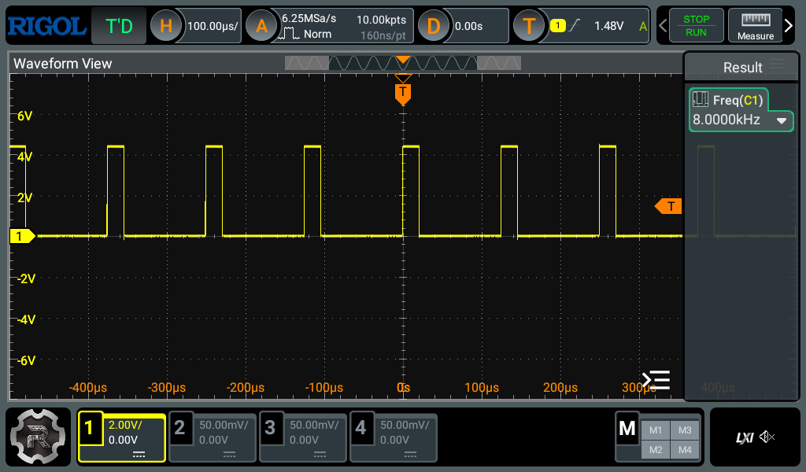
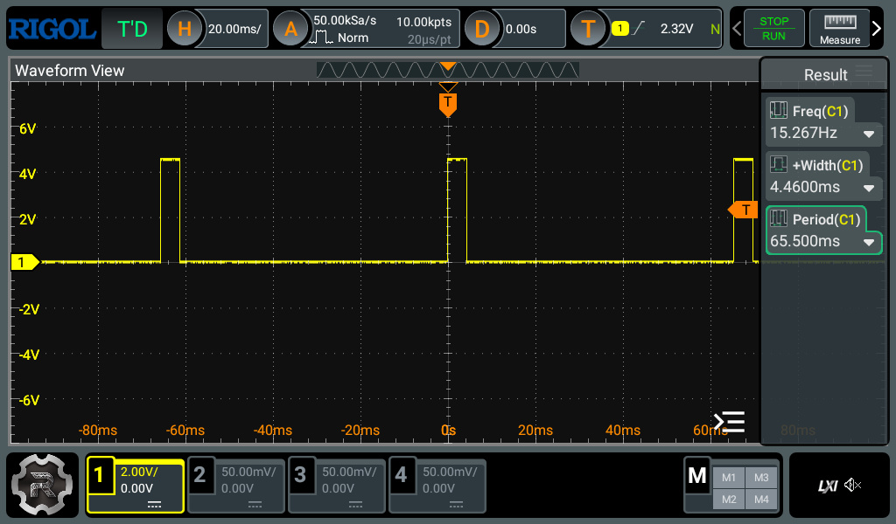
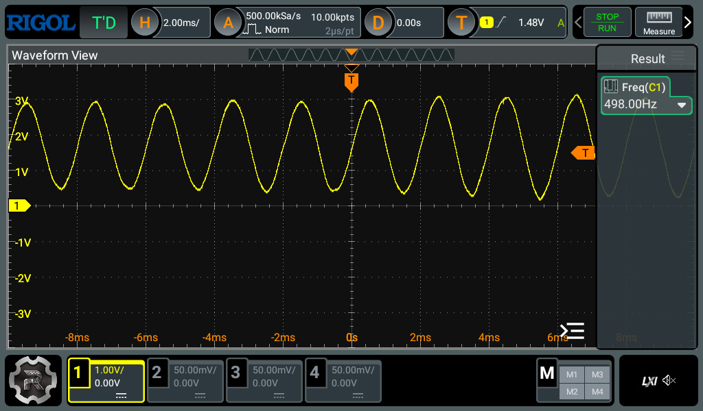
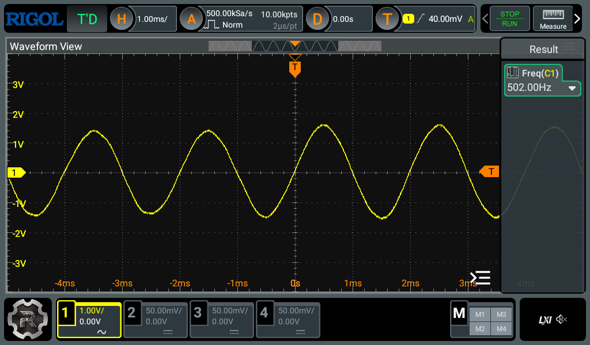
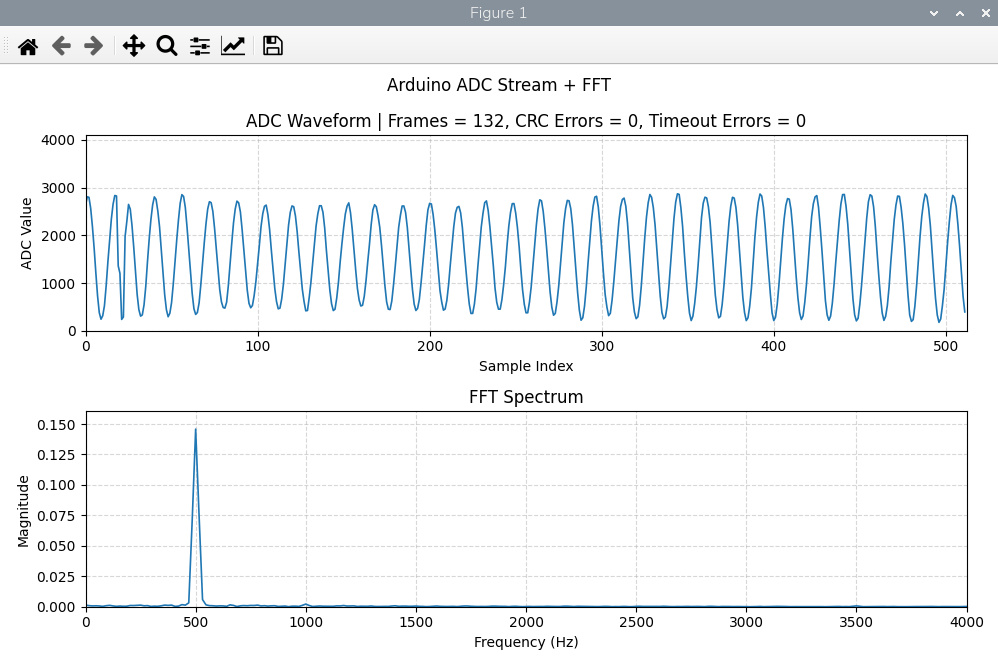

การชักค่าตัวอย่างสัญญาณแอนะล็อก Timer-based ADC Sampling ด้วยบอร์ด Arduino Uno R4 Minima#
Keywords: Arduino Uno R4 Minima, Renesas R7FA4M1A, ADC Sampling, Data Acquisition, Digital Signal Processing, Python-NumPy, FFT, Frequency Spectrum
- Constant-Rate ADC Sampling
- โค้ดตัวอย่างสำหรับ Arduino Sketch
- การใช้งาน I/O ช่วยในการวิเคราะห์การทำงานเชิงเวลา (Timing Analysis)
- โค้ดตัวอย่างสำหรับ Python
- ตัวอย่างการทดสอบและสาธิตการทำงาน: Sine Wave Input
Constant-Rate ADC Sampling#
บทความนี้นำเสนอตัวอย่างการเขียนโค้ด Arduino สำหรับบอร์ด Arduino Uno R4 Minima เพื่อนำมาใช้ในการชักค่าตัวอย่างสัญญาณแอนะล็อก (ADC Sampling) โดยใช้วงจร ADC ภายในไมโครคอนโทรลเลอร์สำหรับอินพุตจำนวน 1 ช่องสัญญาณ และส่งออกข้อมูลไปยังคอมพิวเตอร์เพื่อประมวลผลลำดับถัดไป
สัญญาณแอนะล็อกที่ใช้เป็นอินพุตจะต้องมีแรงดันอยู่ในช่วง 0V ถึง 5V
และนำมาต่อเข้าที่ขา A0 ตามที่กำหนดไว้ในโค้ดตัวอย่าง
การทำงานของวงจร ADC จะเป็นการแปลงระดับแรงดันแอนะล็อกให้เป็นข้อมูลดิจิทัล
ซึ่งเรียกว่า "Sample" ในตัวอย่างนี้ได้กำหนดความละเอียดของข้อมูลไว้ที่ 12 บิต
ด้วยคำสั่ง analogReadResolution(12)
แม้ว่าไมโครคอนโทรลเลอร์รุ่น R7FA4M1 จะรองรับ ADC ซึ่งเป็นแบบ SAR (Successive Approximation Register) สูงสุด 14 บิต แต่ในตัวอย่างนี้เลือกใช้เพียง 12 บิต เพื่อให้เหมาะสมกับความเร็วในการอ่านข้อมูลและลดภาระในการประมวลผล
การใช้ Timer สำหรับ ADC Sampling#
ในการทำงานของไมโครคอนโทรเลลอร์ Arduino โดยทั่วไป
หากใช้คำสั่ง analogRead() ภายใน loop() อัตราการชักตัวอย่างจะไม่คงที่
เนื่องจากขึ้นอยู่กับเวลาการทำงานของคำสั่งอื่น ๆ ภายในโปรแกรม
ดังนั้นตัวอย่างนี้จึงใช้วงจรตัวนับตามจังหวะ หรือ Hardware Timer ภายใน MCU
เพื่อสร้างเหตุการณ์ตามช่วงเวลาที่แน่นอน และใช้ Interrupt
เพื่อเรียกฟังก์ชัน Callback สำหรับอ่านค่า ADC โดยอัตโนมัติ
ในตัวอย่างนี้ได้กำหนดอัตราการทำ ADC Sampling ไว้ที่ TIMER_RATE_HZ = 8000 (หรือ 8000 Samples/sec)
การใช้ Hardware Timer และ Interrupt#
โค้ดตัวอย่างใช้วงจร GPT (General PWM Timer) ซึ่งเป็น Hardware Timer ภายใน R7FA4M1 MCU
เมื่อ Timer ทำงานครบคาบเวลาที่กำหนด จะเกิด Interrupt ขึ้น และระบบจะเรียกฟังก์ชัน Callback
timer_callback() โดยอัตโนมัติ
ภายในฟังก์ชัน Callback จะมีการทำงานสำคัญดังนี้
- อ่านค่า ADC จากขา
A0 - เก็บข้อมูล Sample ลงในหน่วยความจำบัฟเฟอร์ (Buffer)
- นับจำนวน Sample ที่ได้รับ
- สลับบัฟเฟอร์เมื่อเก็บข้อมูลครบหนึ่งชุด
การใช้ Ping-Pong Buffer#
แนวคิดสำคัญคือ ขณะที่ ISR กำลังเขียนข้อมูลลงในบัฟเฟอร์ชุดหนึ่ง
โปรแกรมหลักใน loop() จะสามารถส่งข้อมูลจากอีกบัฟเฟอร์หนึ่งผ่าน Serial
แม้ว่าซีพียูของ MCU จะทำงานได้ทีละคำสั่งและไม่ได้ประมวลผลแบบขนานจริง ๆ แต่ระบบสามารถสลับช่วงเวลาการทำงานระหว่าง ISR และโปรแกรมหลักได้อย่างรวดเร็ว โดย ISR จะมีลำดับความสำคัญสูงกว่า
ดังนั้น เมื่อเกิด Timer Interrupt ซีพียูจะหยุดการทำงานใน loop() ชั่วคราว
เพื่อไปทำ ADC Sampling ภายใน ISR แล้วจึงกลับมาทำงานเดิมต่อ
แนวทางนี้ช่วยให้การทำ ADC Sampling ทำได้อย่างต่อเนื่องและสม่ำเสมอ
โดยไม่ต้องหยุดรอการส่งข้อมูลผ่าน Serial ให้เสร็จก่อน
การจัดรูปแบบข้อมูล (Frame Format)#
ข้อมูลแต่ละบล็อกถูกจัดให้อยู่ในรูปแบบ Frame ก่อนถูกส่งออกทาง Serial ดังนี้
- Header: 4 Bytes (
0xAD 0xDE 0xBE 0xEF) - ADC Samples: 512 * 2 Bytes (รวม 1,024 ไบต์)
- CRC16: 2 Bytes
ส่วนเริ่มต้นหรือ Frame Header มีขนาด 4 ไบต์ ตามด้วยข้อมูล Samples จำนวน 512 Samples
ซึ่งมีขนาดแต่ละ Sample จำนวน 2 ไบต์ (High Byte และตามด้วย Low Byte) และปิดท้ายด้วยค่า
CRC16 Checksum (16-bit) ซึ่งถูกใช้สำหรับตรวจสอบความถูกต้องของข้อมูล
และช่วยตรวจจับความผิดพลาดที่อาจเกิดขึ้นระหว่างการส่งผ่าน Serial
โค้ดตัวอย่างสำหรับ Arduino Sketch#
โค้ด Arduino ทั้งหมด มีดังนี้ และได้ทดลองใช้กับ Arduino Core for Renesas (v1.5.3)
// Target Board: Arduino Uno R4 Minima
#include "FspTimer.h"
constexpr uint32_t BAUD_RATE = 2000000; // 2Mbps
constexpr uint32_t TIMER_RATE_HZ = 8000;
constexpr uint32_t BLOCK_SIZE = 512;
constexpr uint32_t SAMPLE_SIZE = 2;
constexpr uint32_t HEADER_SIZE = 4;
constexpr uint32_t CRC_SIZE = 2;
constexpr uint32_t DATA_SIZE = BLOCK_SIZE * SAMPLE_SIZE;
// Total frame size: 4-byte header + ADC payload + 2-byte CRC16
constexpr uint32_t BUF_BYTE_SIZE = HEADER_SIZE + DATA_SIZE + CRC_SIZE;
// Ping-pong buffers
uint8_t pingBuffer[BUF_BYTE_SIZE];
uint8_t pongBuffer[BUF_BYTE_SIZE];
// Active write/read buffer pointers
volatile uint8_t* currentWriteBuf = pingBuffer;
volatile uint8_t* currentReadBuf = nullptr;
volatile bool dataReady = false;
volatile uint32_t sampleCount = 0;
FspTimer samplingTimer; // the timer instance for ADC sampling
void initTimer();
void timer_callback(timer_callback_args_t* p_args);
uint16_t crc16_ccitt(const uint8_t* data, size_t length);
void setup() {
Serial.begin(2000000);
while (!Serial && millis() < 3000) { delay(1); }
pinMode(13, OUTPUT); // P111
pinMode(10, OUTPUT); // P112
analogReadResolution(12);
// Initialize the hardware timer for ADC sampling
initTimer();
}
void loop() {
if (dataReady) {
// Toggle pin HIGH
R_PORT1->POSR = (1 << 12);
// Cache pointer immediately
uint8_t* bufferToSend = (uint8_t*)currentReadBuf;
// Clear flag early
dataReady = false;
// Compute CRC16 in main loop
uint16_t crc = crc16_ccitt( bufferToSend, HEADER_SIZE + DATA_SIZE);
// Append CRC16 at end of frame
int crcOffset = HEADER_SIZE + DATA_SIZE;
bufferToSend[crcOffset] = (crc >> 8) & 0xFF;
bufferToSend[crcOffset + 1] = crc & 0xFF;
// Send frame
Serial.write(bufferToSend, BUF_BYTE_SIZE);
Serial.flush();
// Toggle pin LOW
R_PORT1->PORR = (1 << 12);
}
}
// CRC16-CCITT (Polynomial = 0x1021, Init value = 0xFFFF)
uint16_t crc16_ccitt(const uint8_t* data, size_t length) {
uint16_t crc = 0xFFFF;
for (size_t i = 0; i < length; i++) {
crc ^= ((uint16_t)data[i] << 8);
for (uint8_t j = 0; j < 8; j++) {
if (crc & 0x8000) {
crc = (crc << 1) ^ 0x1021;
} else {
crc <<= 1;
}
}
}
return crc;
}
// Timer ISR
void timer_callback(timer_callback_args_t* p_args) {
(void)p_args;
// Toggle pin HIGH
R_PORT1->POSR = (1 << 11);
// ADC read
uint16_t adcVal = analogRead(A0) << 4;
// Toggle pin LOW
R_PORT1->PORR = (1 << 11);
// Header written only once at start of block
if (sampleCount == 0) {
currentWriteBuf[0] = 0xAD;
currentWriteBuf[1] = 0xDE;
currentWriteBuf[2] = 0xBE;
currentWriteBuf[3] = 0xEF;
}
// Store ADC sample after header
uint32_t offset = HEADER_SIZE + sampleCount * SAMPLE_SIZE;
currentWriteBuf[offset] = (adcVal >> 8) & 0xFF;
currentWriteBuf[offset + 1] = adcVal & 0xFF;
sampleCount++;
// Buffer complete
if (sampleCount >= BLOCK_SIZE) {
sampleCount = 0; // Reset the sample counter
// Swap ping-pong buffers
if (currentWriteBuf == pingBuffer) {
currentWriteBuf = pongBuffer;
currentReadBuf = pingBuffer;
} else {
currentWriteBuf = pingBuffer;
currentReadBuf = pongBuffer;
}
dataReady = true;
}
}
// Timer Initialization
void initTimer() {
uint8_t timer_type = GPT_TIMER;
int8_t timer_index = FspTimer::get_available_timer(timer_type);
if (timer_index < 0) {
timer_index = FspTimer::get_available_timer(timer_type, true);
}
FspTimer::force_use_of_pwm_reserved_timer();
samplingTimer.begin(
TIMER_MODE_PERIODIC,
timer_type, timer_index,
TIMER_RATE_HZ, 0.0f,
timer_callback, nullptr);
samplingTimer.setup_overflow_irq();
samplingTimer.open();
samplingTimer.start();
}
การใช้งาน I/O ช่วยในการวิเคราะห์การทำงานเชิงเวลา (Timing Analysis)#
การทำงานของโค้ด Arduino Sketch มีการใช้งานขา D13 และ D10
เป็นเอาต์พุตสำหรับสร้างสัญญาณพัลส์ เพื่อนำไปใช้ในการวิเคราะห์การทำงานเชิงเวลา
ด้วย Oscilloscope หรือ Logic Analyzer
ลักษณะการใช้งานมีดังนี้
D13: จะมีสัญญาณพัลส์เป็น HIGH ในช่วงเวลาที่มีการใช้คำสั่งanalogRead(A0)สำหรับการทำ ADC Sampling ภายใน ISRD10: จะมีสัญญาณพัลส์เป็น HIGH ในช่วงเวลาที่โปรแกรมหลักกำลังส่งข้อมูลในบัฟเฟอร์ออกทางSerial
จากสัญญาณที่เกิดขึ้น ผู้ใช้งานสามารถวัดช่วงเวลาการทำงานของส่วนต่าง ๆ ในโปรแกรมได้ เช่น
- ระยะเวลาที่ใช้ในการอ่านค่า ADC
- คาบเวลาของ ADC Sampling
- ระยะเวลาที่ใช้ในการส่งข้อมูลผ่าน
Serial - ความสม่ำเสมอของการเกิด Interrupt
การกำหนดค่าลอจิกที่ขาเอาต์พุตจะหลีกเลี่ยงการใช้คำสั่ง digitalWrite()
และใช้วิธีเข้าถึงรีจิสเตอร์ระดับล่างโดยตรงแทน เช่น
R_PORT1->POSR = (1 << 11); // Set P111 (D13) -> HIGH
R_PORT1->PORR = (1 << 11); // Clear P111 (D13) -> LOW
แนวทางนี้ช่วยลดเวลาการทำงานของคำสั่งได้อย่างมาก
เมื่อเปรียบเทียบกับ digitalWrite()
เนื่องจากไม่มีขั้นตอนของ Arduino API เข้ามาเกี่ยวข้อง
ตามที่ได้กล่าวไปแล้ว การทำงานของบอร์ด Arduino มีการสร้างสัญญาณเอาต์พุตที่ขา D13 และ D10 เพื่อนำไปใช้ในการวิเคราะห์การทำงานเชิงเวลาด้วยออสซิลโลสโคป ดังนี้
- Arduino D13 (P111 MCU Pin): จะสร้างสัญญาณพัลส์ โดยเปลี่ยนสถานะจาก LOW → HIGH ก่อนเริ่มอ่านค่า ADC และเปลี่ยนกลับจาก HIGH → LOW เมื่อจบขั้นตอน ADC
- Arduino D10 (P112 MCU Pin): จะสร้างสัญญาณพัลส์ โดยเปลี่ยนสถานะจาก LOW → HIGH ก่อนเริ่มส่งข้อมูลของบัฟเฟอร์ออกทาง
Serialซึ่งจะต้องมีการคำนวณค่า CRC16 ของข้อมูลด้วย และเปลี่ยนกลับจาก HIGH → LOW เมื่อจบขั้นตอนดังกล่าว
ความกว้างของสัญญาณพัลส์ที่ขา GPIO ทั้งสอง สามารถวัดได้โดยใช้ออสซิลโลสโคป ซึ่งช่วยให้ทราบระยะเวลาในการทำงานของแต่ละขั้นตอนภายในระบบ
ตัวอย่างการคำนวณเวลาในการเก็บข้อมูลและส่งข้อมูล มีดังนี้
- อัตรา ADC Sampling เท่ากับ 8 kHz หรือ 8000 Samples/sec ดังนั้นคาบเวลาของการ Sampling เท่ากับ หรือประมาณ 125 µs per sample
- หากต้องการเก็บข้อมูลจำนวน 512 Samples จะใช้เวลาประมาณ 512 × 125 μs = 64 ms ดังนั้น จะใช้เวลาประมาณ 64 ms จึงจะทำให้ข้อมูลครบหนึ่งบัฟเฟอร์
- ในขณะที่อีกบัฟเฟอร์เมื่อได้ข้อมูลครบหนึ่งเฟรมแล้ว จะถูกส่งออกทาง
Serialโดยข้อมูลต่อหนึ่งเฟรมมีขนาดเท่ากับ 4+1024+2 = 1030 ไบต์ - สำหรับการส่งข้อมูลแบบ Serial รูปแบบ 8N1 ข้อมูล 1 ไบต์จะถูกส่งจริงเป็น 10 บิต ได้แก่
- Start bit: 1 บิต
- Data bits: 8 บิต
- Stop bit: 1 บิต
- จำนวนบิตทั้งหมดที่ต้องส่งคือ 1030 × 10 = 10300 bits เมื่อใช้อัตรา Baud Rate เท่ากับ 2 Mbps (ตามที่ตั้งค่าไว้ในโค้ด) เวลาที่ใช้ในการส่งข้อมูลจะประมาณได้เป็น 10300 / 2000000 = 5.15 ms
- อย่างไรก็ตาม การคำนวณข้างต้นเป็นเพียงการประมาณเวลาส่งข้อมูลตามหลักการของ UART แบบ 8N1 ทั่วไป
แต่ในความเป็นจริง การทำงานของ
Serialโดยใช้ USB-CDC (USB Communication Device Class) สำหรับ Arduino Uno R4 Minima จะได้อัตราการส่งที่สูงถึงประมาณ ~3.3Mbps (จากการทดสอบ) และใช้เวลาน้อยกว่าค่าที่คำนวณได้ (จะต้องใช้เวลาไม่น้อยกว่า 10300 / 3300000 = 3.12 ms)

รูป: สัญญาณที่ขา D13

รูป: สัญญาณที่ขา D10
สัญญาณที่ขา D13 แสดงให้เห็นว่า มีการเกิดสัญญาณพัลส์ด้วยอัตราคงที่ 8 kHz
ซึ่งตรงกับความถี่ที่กำหนดไว้สำหรับการทำ ADC Sampling
ช่วงเวลาที่สัญญาณมีลอจิกเป็น HIGH
คือช่วงเวลาที่ MCU กำลังทำคำสั่ง analogRead()
ภายใน ISR เมื่อเกิด Timer Interrupt ในแต่ละครั้ง
ดังนั้น การเก็บข้อมูลครบหนึ่งเฟรมจะใช้เวลาประมาณ 64 msec
สัญญาณที่ขา D10 แสดงให้เห็นช่วงเวลาที่โปรแกรมหลักใช้ในการคำนวณค่า CRC16
และส่งข้อมูลหนึ่งเฟรมออกทาง Serial ไปยังคอมพิวเตอร์
จากการวัดสัญญาณพบว่า กระบวนการดังกล่าวใช้เวลาประมาณ 4.46 msec ต่อหนึ่งเฟรม เนื่องจากเวลาที่ใช้ในการส่งข้อมูลหนึ่งเฟรมน้อยกว่าระยะเวลาในการเก็บข้อมูลครบหนึ่งเฟรม (64 msec) จึงทำให้ระบบสามารถส่งข้อมูลได้ทัน และไม่เกิดปัญหา Buffer Overrun
การเพิ่มความถี่ของ ADC Sampling จากเดิม 8 kHz ให้สูงขึ้นสามารถทำได้ แต่จะต้องพิจารณาข้อจำกัดของระบบหลายประการ เช่น
- Timer Interrupt Latency
- ระยะเวลาการทำงานของ ISR
- ความเร็วในการอ่านค่า ADC ซึ่งคำสั่ง
analogRead()ใช้เวลาประมาณ 23.5 usec - ความเร็วในการส่งข้อมูลผ่าน
Serial - ภาระการทำงานของ CPU
เมื่อเพิ่มความถี่ Sampling ให้สูงขึ้น ช่วงเวลาระหว่าง Interrupt จะสั้นลง ดังนั้น CPU จะต้องเข้าไปทำงานภายใน ISR บ่อยขึ้น
หาก ISR ใช้เวลาทำงานนานเกินไป จะทำให้ค่า Duty Cycle ของการทำงานภายใน ISR เพิ่มสูงขึ้น ส่งผลให้ CPU มีเวลาเหลือน้อยลงสำหรับการทำงานส่วนอื่น
เมื่อเพิ่มความถี่ของ ADC Sampling ให้สูงขึ้น ระยะเวลาในการเก็บข้อมูลให้ครบหนึ่งเฟรมก็จะสั้นลงตามไปด้วย
ดังนั้น ระบบจะต้องส่งข้อมูลเฟรมออกทาง Serial บ่อยขึ้น ซึ่งทำให้อัตราการรับส่งข้อมูลของระบบเพิ่มสูงขึ้น
หากโปรแกรมไม่สามารถประมวลผลข้อมูลได้ทัน อาจทำให้เกิดปัญหา เช่น Buffer Overrun หรือ Data Loss ได้
โค้ดตัวอย่างสำหรับ Python#
ข้อมูลที่ถูกส่งออกมาจากบอร์ด Arduino Uno R4 Minima ผ่านทาง Serial (USB-CDC)
จะถูกนำไปรับและประมวลผลด้วยโปรแกรมที่เขียนด้วยภาษา Python
ซึ่งทำหน้าที่ดังนี้
- อ่านข้อมูลเข้าทางพอร์ต
Serialของคอมพิวเตอร์ ตามหมายเลขพอร์ตที่เชื่อมต่อกับบอร์ด - ตรวจสอบข้อมูลที่ได้รับเพื่อค้นหาส่วน Framew Header ของเฟรมข้อมูล
- รอรับข้อมูลให้ครบหนึ่งเฟรม
- ตรวจสอบความถูกต้องของข้อมูลด้วยค่า CRC16
- นำข้อมูล Samples ที่ได้รับไปคำนวณด้วยอัลกอริทึม FFT (Fast Fourier Transform)
- แสดงผลข้อมูลในรูปแบบกราฟสเปกตรัมความถี่ (Frequency Spectrum)
ก่อนใช้งาน Python Script จะต้องติดตั้งแพ็กเกจที่จำเป็นดังต่อไปนี้
pip install pyserial matplotlib numpy
การตั้งค่าที่สำคัญภายในโค้ด Python มีดังนี้
- ค่า Sample Rate จะต้องตรงกับอัตราการทำ ADC Sampling ที่กำหนดไว้ในโค้ดของบอร์ด Arduino ซึ่งในตัวอย่างนี้ใช้ค่า 8000 Hz
- รูปแบบของเฟรมข้อมูล รวมถึงจำนวน Samples ในแต่ละเฟรม จะต้องสอดคล้องกับรูปแบบข้อมูลที่ส่งมาจากบอร์ด Arduino โดยในตัวอย่างนี้กำหนดไว้ที่ 512 Samples ต่อเฟรม
- ชื่อพอร์ต Serial จะต้องตรงกับพอร์ตของบอร์ด Arduino ที่เชื่อมต่ออยู่ ซึ่งอาจมีชื่อแตกต่างกันตามระบบปฏิบัติการ เช่น
- Windows:
COM3,COM5 - Linux:
/dev/ttyACM0 - macOS:
/dev/cu.usbmodemxxxx
- Windows:
โค้ด Python ทั้งหมด มีดังนี้
"""
Demo: Real-Time Arduino ADC Streaming + FFT Visualization
Description
-----------
This Python program receives high-speed ADC sample frames from an
Arduino Uno R4 board over USB serial UART and displays:
1. Time-domain ADC waveform
2. Frequency-domain FFT spectrum
The Arduino firmware continuously transmits frames using the format:
[4-byte HEADER]
[ADC PAYLOAD]
[CRC16-CCITT]
Frame Structure
---------------
Header:
0xAD 0xDE 0xBE 0xEF
Payload:
512 ADC samples
Each sample = uint16_t (big-endian)
Total payload size = 1024 bytes
CRC:
CRC16-CCITT
Polynomial = 0x1021
Initial value = 0xFFFF
Total Frame Size:
4 + 1024 + 2 = 1030 bytes
Features
--------
- Automatic frame synchronization using header detection
- CRC16 validation
- Frame timeout recovery
- Automatic UART stream re-synchronization
- Real-time FFT visualization
- Runtime package version reporting
Required Python Packages
------------------------
pip install pyserial numpy matplotlib
Note:
This Python program must be used together with an Arduino Uno R4 Minima,
an analog microphone module, and the corresponding Arduino sketch
for high-speed ADC streaming on the Arduino Uno R4.
"""
import time
import serial
import numpy as np
import matplotlib.pyplot as plt
# CONFIGURATION
SERIAL_PORT = "/dev/ttyACM0"
BAUDRATE = 2000000
# The sample rate (ADC sampling rate)
SAMPLING_RATE = 8000
# The number of samples (suitable for FFT computation)
BLOCK_SIZE = 512
# The four-byte header
HEADER = b"\xad\xde\xbe\xef"
HEADER_SIZE = 4
CRC_SIZE = 2
SAMPLE_SIZE = 2
DATA_SIZE = BLOCK_SIZE * SAMPLE_SIZE
# Complete frame: [HEADER][ADC PAYLOAD][CRC16]
FRAME_SIZE = HEADER_SIZE + DATA_SIZE + CRC_SIZE
# Timeout while waiting for remaining frame bytes
FRAME_TIMEOUT_SEC = 0.050
# CRC16-CCITT: Polynomial = 0x1021, Initial value = 0xFFFF
def crc16_ccitt(data: bytes) -> int:
crc = 0xFFFF
for byte in data:
crc ^= byte << 8
for _ in range(8):
if crc & 0x8000:
crc = ((crc << 1) ^ 0x1021) & 0xFFFF
else:
crc = (crc << 1) & 0xFFFF
return crc
# FFT Frequency Axis
fft_freqs = np.fft.rfftfreq(BLOCK_SIZE, d=1.0 / SAMPLING_RATE)
NUM_FFT_BINS = len(fft_freqs)
# Matplotlib Setup
plt.ion()
fig, (ax1, ax2) = plt.subplots(2, 1, figsize=(10, 6))
fig.suptitle("Arduino ADC Stream + FFT", fontsize=12)
# Time Domain Plot
(line1,) = ax1.plot(range(BLOCK_SIZE), np.zeros(BLOCK_SIZE), lw=1.2)
ax1.set_title("ADC Waveform")
ax1.set_xlim(0, BLOCK_SIZE)
ax1.set_ylim(0, 4095)
ax1.set_ylabel("ADC Value")
ax1.set_xlabel("Sample Index")
ax1.grid(True, linestyle="--", alpha=0.5)
# FFT Plot
(line2,) = ax2.plot(fft_freqs, np.zeros(NUM_FFT_BINS), lw=1.2)
ax2.set_title("FFT Spectrum")
ax2.set_xlim(0, SAMPLING_RATE / 2)
ax2.set_ylabel("Magnitude")
ax2.set_xlabel("Frequency (Hz)")
ax2.grid(True, linestyle="--", alpha=0.5)
plt.tight_layout()
# Open Serial Port
try:
ser = serial.Serial(SERIAL_PORT, BAUDRATE, timeout=0.005)
ser.reset_input_buffer()
print(f"Connected to {SERIAL_PORT}")
except Exception as e:
print(f"Serial connection error: {e}")
raise SystemExit
# Receive Buffer
rx_buffer = bytearray()
# Statistics
good_frames = 0
crc_errors = 0
timeout_errors = 0
# Main Loop
try:
while plt.fignum_exists(fig.number):
# Read available UART bytes
available = ser.in_waiting
if available > 0:
rx_buffer.extend(ser.read(available))
# Search for valid frame header
header_index = rx_buffer.find(HEADER)
if header_index < 0:
# Keep only last few bytes
# to detect split header sequences
if len(rx_buffer) > HEADER_SIZE:
rx_buffer = rx_buffer[-HEADER_SIZE:]
continue
# Remove junk before header
if header_index > 0:
del rx_buffer[:header_index]
# Wait until complete frame arrives
if len(rx_buffer) < FRAME_SIZE:
start_wait = time.monotonic()
while len(rx_buffer) < FRAME_SIZE:
available = ser.in_waiting
if available > 0:
rx_buffer.extend(ser.read(available))
# Timeout waiting for frame completion
if (time.monotonic() - start_wait) > FRAME_TIMEOUT_SEC:
timeout_errors += 1
print(f"Timeout waiting frame "
f"(timeouts={timeout_errors})")
# Drop first byte and re-sync
del rx_buffer[0]
break
# restart processing
continue
# Extract one complete frame
frame = bytes(rx_buffer[:FRAME_SIZE])
del rx_buffer[:FRAME_SIZE]
# Verify header
if frame[0:HEADER_SIZE] != HEADER:
continue
# Split frame
payload = frame[HEADER_SIZE : HEADER_SIZE + DATA_SIZE]
received_crc = (frame[-2] << 8) | frame[-1]
# CRC Check
computed_crc = crc16_ccitt(frame[0 : HEADER_SIZE + DATA_SIZE])
if computed_crc != received_crc:
crc_errors += 1
print(
f"CRC ERROR "
f"RX=0x{received_crc:04X} "
f"CALC=0x{computed_crc:04X} "
f"(crc_errors={crc_errors})"
)
# Skip bad frame
continue
good_frames += 1
# Convert payload -> uint16 samples
# Arduino sends: MSB and LSB bytes of each sample
# Big-endian uint16
samples_16 = np.frombuffer(payload, dtype=">u2").astype(np.float32)
# Undo left shift by 4
adc_samples = samples_16 / 16.0
# Normalize
normalized = adc_samples / 4095.0
# FFT calculation
# Remove Trend / Remove DC Offset
detrended = normalized - np.mean(normalized)
# Apply the Hanning windowing function
windowed = detrended * np.hanning(BLOCK_SIZE)
# Compute the FFT coefficients and use the magnitude values for plot
fft_mag = np.abs(np.fft.rfft(windowed)) * (2.0 / BLOCK_SIZE)
# Update waveform plot
line1.set_ydata(adc_samples)
# Update FFT plot
line2.set_ydata(fft_mag)
ax2.set_ylim(0, max(0.02, np.max(fft_mag) * 1.1))
# Display statistics
ax1.set_title(
f"ADC Waveform | "
f"Frames = {good_frames}, "
f"CRC Errors = {crc_errors}, "
f"Timeout Errors = {timeout_errors}"
)
# Refresh GUI
fig.canvas.draw_idle()
fig.canvas.flush_events()
except KeyboardInterrupt:
print("\nStopped by user.")
finally:
print("User terminated...")
ser.close()
ตัวอย่างการทดสอบและสาธิตการทำงาน: Sine Wave Input#
ถัดไปเป็นตัวอย่างการทดสอบและสาธิตการทำงานของระบบโดยรวม
โดยเริ่มต้นจากการจัดเตรียมสัญญาณอินพุตแอนะล็อกสำหรับป้อนให้วงจร ADC
ของบอร์ด Arduino Uno R4 Minima ที่ขา A0
สัญญาณอินพุตควรมีระดับแรงดันอยู่ในช่วง 0V ถึง 5V เพื่อให้เหมาะสมกับช่วงแรงดันของวงจร ADC ภายใน MCU
ตัวอย่างแหล่งกำเนิดสัญญาณทดสอบ มีดังนี้
- ใช้เครื่องมือวัด Function Generator จำนวน 1 ช่องสัญญาณ โดยเลือกสัญญาณรูปไซน์ (Sine Wave)และกำหนดค่าตัวอย่างดังนี้ ซึ่งจะทำให้สัญญาณมีระดับแรงดันอยู่ในช่วงประมาณ 0V ถึง 3V
- Frequency = 500 Hz
- Vpp = 3V
- Voffset = 1.5V
- หากไม่มี Function Generator อาจใช้โมดูลไมโครโฟนแบบแอนะล็อกเป็นอินพุตแทน เช่น โมดูลที่ใช้ไอซี MAX9814 หรือ MAX4466 และใช้สัญญาณเสียงทดสอบรูปไซน์ (Sine Wave Test Tone) จากคอมพิวเตอร์ หรือ สมาร์ตโฟน ส่งออกทางลำโพง แล้วนำไปวางใกล้ ๆ โมดูลไมโครโฟนเสียง
โมดูลไมโครโฟนเสียง (ใช้แรงดันไฟเลี้ยง VCC = +3.3V) สัญญาณเอาต์พุตของโมดูลไมโครโฟนมีช่วงแรงดันประมาณ 0V ถึง VCC และในกรณีไม่มีสัญญาณเสียง ค่าแรงดันเอาต์พุตจะอยู่ใกล้ระดับ VCC/2
ตัวอย่างของสัญญาณแอนะล็อกที่ได้นำมาทดสอบ โดยใช้ออสซิลสโคป ตรวจสอบสัญญาณในเบื้องต้น

รูป: สัญญาณรูปคลื่นไซน์ 500Hz (มี DC offset แรงดันไฟฟ้าไม่ต่ำกว่า 0V) ตั้งค่าออสซิลโลสโคปในโหมด DC Coupling

รูป: สัญญาณรูปคลื่นไซน์ 500Hz ตั้งค่าออสซิลโลสโคปในโหมด DC Coupling (ไม่มี DC offset)

รูป: ตัวอย่างการแสดงรูป Signal Samples (บน) และ FFT-based Frequency Spectrum (ล่าง) สำหรับสัญญาณเสียงรูปไซน์ความถี่ 500Hz ที่ได้จากโมดูลไมโครโฟนเสียงแบบแอนะล็อก
จากรูปกราฟ Frequency Spectrum จะเห็นได้ว่า ช่วงความถี่ 500Hz จะมีขนาดสูงกว่าช่วงความถี่อื่นอย่างชัดเจน ซึ่งตรงกับความถี่ของสัญญาณอินพุตรูปไซน์ที่ได้นำมาทดสอบ
ข้อสังเกต:
- ในการทำงานของโค้ด Python ก่อนการคำนวณ FFT มีการหาค่าเฉลี่ยของข้อมูล Samples ภายในแต่ละเฟรมแล้วนำค่าเฉลี่ยดังกล่าวไปลบออกจากข้อมูลทุกค่า ขั้นตอนนี้มีผลเทียบเท่ากับการตัดค่า DC Offset หรือ DC Component ของสัญญาณออกก่อนทำ FFT ดังนั้น เมื่อแสดงผลในรูป Frequency Spectrum จึงไม่ปรากฏองค์ประกอบของสัญญาณที่ความถี่ 0Hz และช่วยให้สามารถสังเกตองค์ประกอบสัญญาณ AC ในย่านความถี่อื่นได้ชัดเจนมากขึ้น
กล่าวสรุป#
บทความนี้ได้นำเสนอตัวอย่างการใช้งานบอร์ด Arduino Uno R4 Minima สำหรับการชักค่าตัวอย่างจากสัญญาณแอนะล็อกจำนวน 1 ช่องสัญญาณ และส่งข้อมูลไปยังคอมพิวเตอร์ผ่านทางพอร์ต USB-Serial เพื่อใช้ในการประมวลผลสัญญาณต่อไป
ข้อมูลที่ได้รับในแต่ละเฟรมจะถูกนำไปคำนวณด้วยอัลกอริทึม FFT และแสดงผลในรูปแบบกราฟสเปกตรัมความถี่แบบ Real-Time Plot
ตัวอย่างฮาร์ดแวร์และซอฟต์แวร์ในบทความนี้ จัดทำขึ้นเพื่อใช้ในการสาธิตและทดลองเรียนรู้หลักการพื้นฐานของระบบประมวลผลสัญญาณดิจิทัล (Digital Signal Processing: DSP) เนื้อหาเกี่ยวข้องกับองค์ความรู้พื้นฐานหลายด้าน เช่น
- Embedded Systems / Microcontroller Programming
- Digital Signal Processing (DSP)
- Instrumentation and Signal Measurement
- Real-Time Data Acquisition
- Python Programming
This work is licensed under a Creative Commons Attribution-ShareAlike 4.0 International License.
Created: 2026-05-23 | Last Updated: 2026-05-24